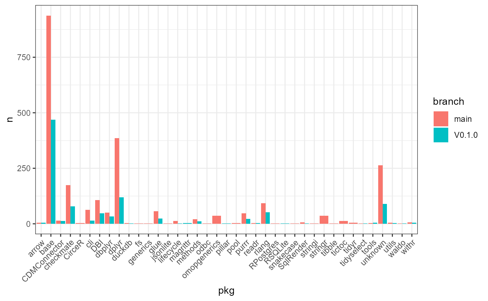
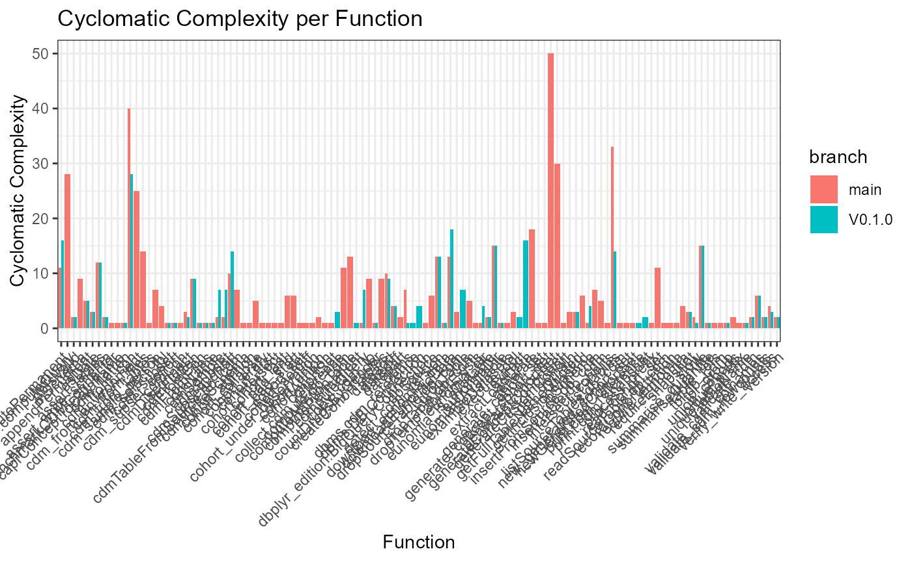
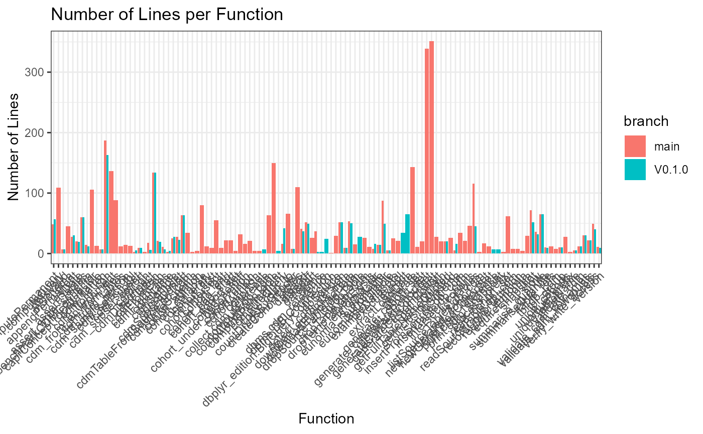
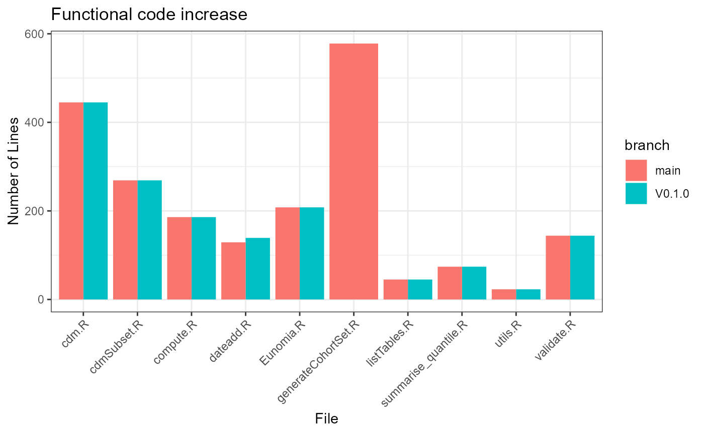

vignettes/articles/ComparingBranches.Rmd
ComparingBranches.Rmd
tempDir <- tempdir()
pathToRepo <- file.path(tempDir, "CDMConnector")
git2r::clone(
url = "https://github.com/darwin-eu/CDMConnector.git",
local_path = pathToRepo
)## cloning into 'C:\Users\MVANKE~1\AppData\Local\Temp\RtmpKgSdK4/CDMConnector'...
## Receiving objects: 1% (34/3319), 63 kb
## Receiving objects: 11% (366/3319), 120 kb
## Receiving objects: 21% (697/3319), 176 kb
## Receiving objects: 31% (1029/3319), 288 kb
## Receiving objects: 41% (1361/3319), 400 kb
## Receiving objects: 51% (1693/3319), 456 kb
## Receiving objects: 61% (2025/3319), 7292 kb
## Receiving objects: 71% (2357/3319), 12223 kb
## Receiving objects: 81% (2689/3319), 12279 kb
## Receiving objects: 91% (3021/3319), 12335 kb
## Receiving objects: 100% (3319/3319), 19820 kb, done.## Local: main C:/Users/mvankessel/AppData/Local/Temp/RtmpKgSdK4/CDMConnector
## Remote: main @ origin (https://github.com/darwin-eu/CDMConnector.git)
## Head: [764154b] 2023-06-13: bugfix
repo <- PaRe::Repository$new(pathToRepo)
repo$gitCheckout("main")
repo$gitPull()
dev <- repo$clone()
dev$gitCheckout("75e7333cb2d9f8ec7f7a77ae21fb611f8141ef0e")## Switched to: 75e7333cb2d9f8ec7f7a77ae21fb611f8141ef0e## Re-initializing
repo$getPath()## [1] "C:\\Users\\mvankessel\\AppData\\Local\\Temp\\RtmpKgSdK4\\CDMConnector"
repo$getName()## [1] "CDMConnector"
repo$getDescription()## Package: CDMConnector
## Title: Connect to an OMOP Common Data Model
## Version: 1.0.0
## Authors@R (parsed):
## * Adam Black <black@ohdsi.org> [aut, cre] (<https://orcid.org/0000-0001-5576-8701>)
## * Artem Gorbachev <artem.gorbachev@odysseusinc.com> [aut]
## * Edward Burn <edward.burn@ndorms.ox.ac.uk> [aut]
## * Marti Catala Sabate <marti.catalasabate@ndorms.ox.ac.uk> [aut]
## Description: Provides tools for working with observational health
## data in the Observational Medical Outcomes Partnership (OMOP) Common
## Data Model format with a pipe friendly syntax. Common data model
## database table references are stored in a single compound object along
## with metadata.
## License: Apache License (>= 2)
## URL: https://darwin-eu.github.io/CDMConnector/,
## https://github.com/darwin-eu/CDMConnector
## BugReports: https://github.com/darwin-eu/CDMConnector/issues
## Depends:
## R (>= 4.0)
## Imports:
## checkmate,
## cli,
## DBI (>= 0.3.0),
## dbplyr,
## dplyr,
## fs,
## generics,
## glue,
## jsonlite,
## lifecycle,
## magrittr,
## methods,
## pillar,
## purrr,
## readr,
## rlang,
## stringr,
## tidyr,
## tidyselect,
## waldo,
## withr
## Suggests:
## arrow,
## bigrquery,
## covr,
## DatabaseConnector,
## duckdb,
## ggplot2,
## knitr,
## lubridate,
## odbc,
## rJava,
## rmarkdown,
## RPostgres,
## RSQLite,
## SqlRender,
## testthat (>= 3.0.0),
## tibble,
## zeallot
## Enhances:
## CirceR
## VignetteBuilder:
## knitr
## Additional_repositories: https://OHDSI.github.io/drat
## Config/testthat/edition: 3
## Encoding: UTF-8
## Roxygen: list(markdown = TRUE)
## RoxygenNote: 7.2.3
files <- repo$getFiles()
files## $R
## $R[[1]]
## <File> <Code> <R6>
## Name: cdm.R
## # Lines: 709
## $R[[2]]
## <File> <Code> <R6>
## Name: cdm_reference_methods.R
## # Lines: 40
## $R[[3]]
## <File> <Code> <R6>
## Name: cdm_select_tbl.R
## # Lines: 40
## $R[[4]]
## <File> <Code> <R6>
## Name: CDMConnector-package.R
## # Lines: 13
## $R[[5]]
## <File> <Code> <R6>
## Name: cdmSubset.R
## # Lines: 497
## $R[[6]]
## <File> <Code> <R6>
## Name: compute.R
## # Lines: 362
## $R[[7]]
## <File> <Code> <R6>
## Name: dateadd.R
## # Lines: 235
## $R[[8]]
## <File> <Code> <R6>
## Name: Eunomia.R
## # Lines: 307
## $R[[9]]
## <File> <Code> <R6>
## Name: generateCohortSet.R
## # Lines: 821
## $R[[10]]
## <File> <Code> <R6>
## Name: intersect.R
## # Lines: 105
## $R[[11]]
## <File> <Code> <R6>
## Name: listTables.R
## # Lines: 66
## $R[[12]]
## <File> <Code> <R6>
## Name: summarise_quantile.R
## # Lines: 129
## $R[[13]]
## <File> <Code> <R6>
## Name: utils.R
## # Lines: 109
## $R[[14]]
## <File> <Code> <R6>
## Name: validate.R
## # Lines: 229
##
## $cpp
## list()
##
## $o
## list()
##
## $h
## list()
##
## $java
## list()
##
## $sql
## list()
file <- files$R[[1]]
file## <File> <Code> <R6>
## Name: cdm.R
## # Lines: 709
file$getName()## [1] "cdm.R"
file$getNLines()## [1] 709
file$getType()## [1] "R"
head(file$getLines())## [1] "#' Create a CDM reference object from a database connection"
## [2] "#'"
## [3] "#' @param con A DBI database connection to a database where an OMOP CDM v5.4 or"
## [4] "#' v5.3 instance is located."
## [5] "#' @param cdm_schema,cdmSchema The schema where the OMOP CDM tables are located. Defaults"
## [6] "#' to NULL."
tail(file$getLines())## [1] " DBI::dbDisconnect(attr(cdm, \"dbcon\"), shutdown = TRUE)"
## [2] "}"
## [3] ""
## [4] "#' @rdname cdmDisconnect"
## [5] "#' @export"
## [6] "cdm_disconnect <- cdmDisconnect"
file$getFunctionTable()## name lineStart lineEnd nArgs cycloComp
## 1 cdm_from_con 20 175 7 22
## 2 cdmFromCon 179 193 7 1
## 3 detect_cdm_version 195 245 3 13
## 4 version 265 273 1 2
## 5 cdmName 298 301 1 1
## 6 print.cdm_reference 315 321 2 1
## 7 verify_write_access 326 362 4 3
## 8 tbl_group 397 406 1 1
## 9 dbms 428 430 1 1
## 10 dbms.cdm_reference 433 435 1 1
## 11 dbms.DBIConnection 438 461 1 4
## 12 stow 480 511 4 1
## 13 cdm_from_files 523 572 4 3
## 14 cdmFromFiles 577 583 4 1
## 15 collect.cdm_reference 607 613 2 3
## 16 snapshot 641 693 1 3
## 17 cdmDisconnect 700 705 1 2
functions <- file$getFunctions()
functions## [[1]]
## <Function> <Code> <R6>
## Name: cdm_from_con
## # Lines: 156
## [[2]]
## <Function> <Code> <R6>
## Name: cdmFromCon
## # Lines: 15
## [[3]]
## <Function> <Code> <R6>
## Name: detect_cdm_version
## # Lines: 51
## [[4]]
## <Function> <Code> <R6>
## Name: version
## # Lines: 9
## [[5]]
## <Function> <Code> <R6>
## Name: cdmName
## # Lines: 4
## [[6]]
## <Function> <Code> <R6>
## Name: print.cdm_reference
## # Lines: 7
## [[7]]
## <Function> <Code> <R6>
## Name: verify_write_access
## # Lines: 37
## [[8]]
## <Function> <Code> <R6>
## Name: tbl_group
## # Lines: 10
## [[9]]
## <Function> <Code> <R6>
## Name: dbms
## # Lines: 3
## [[10]]
## <Function> <Code> <R6>
## Name: dbms.cdm_reference
## # Lines: 3
## [[11]]
## <Function> <Code> <R6>
## Name: dbms.DBIConnection
## # Lines: 24
## [[12]]
## <Function> <Code> <R6>
## Name: stow
## # Lines: 32
## [[13]]
## <Function> <Code> <R6>
## Name: cdm_from_files
## # Lines: 50
## [[14]]
## <Function> <Code> <R6>
## Name: cdmFromFiles
## # Lines: 7
## [[15]]
## <Function> <Code> <R6>
## Name: collect.cdm_reference
## # Lines: 7
## [[16]]
## <Function> <Code> <R6>
## Name: snapshot
## # Lines: 53
## [[17]]
## <Function> <Code> <R6>
## Name: cdmDisconnect
## # Lines: 6## <Function> <Code> <R6>
## Name: cdm_from_con
## # Lines: 156
fun$getName()## [1] "cdm_from_con"
fun$getNLines()## [1] 156
fun$getFunction()## name lineStart lineEnd nArgs cycloComp
## 1 cdm_from_con 20 175 7 22
head(fun$getLines())## [1] "cdm_from_con <- function(con,"
## [2] " cdm_schema = NULL,"
## [3] " write_schema = NULL,"
## [4] " cohort_tables = NULL,"
## [5] " cdm_version = \"5.3\","
## [6] " cdm_name = NULL) {"
tail(fun$getLines())## [1] " # The following attributes can be used to communicate temp table preferences to downstream analytic packages."
## [2] " # This a feature for analytic package developers and users should not need to know about it unless there is an issue to debug."
## [3] " attr(cdm, \"cohort_as_temp\") <- FALSE"
## [4] " attr(cdm, \"intermediate_as_temp\") <- TRUE"
## [5] " return(cdm)"
## [6] "}"
dplyr::bind_rows(
PaRe::countPackageLines(repo) %>% mutate(branch = "main"),
PaRe::countPackageLines(dev) %>% mutate(branch = "V0.1.0")
)## # A tibble: 2 × 7
## R cpp o h java sql branch
## <int> <int> <int> <int> <int> <int> <chr>
## 1 3662 0 0 0 0 0 main
## 2 2628 0 0 0 0 0 V0.1.0
PaRe::pkgDiagram(repo)
PaRe::pkgDiagram(dev)
mainFunUse <- PaRe::getFunctionUse(repo) %>%
mutate(branch = "main")
devFunUse <- PaRe::getFunctionUse(dev) %>%
mutate(branch = "V0.1.0")
pkgUse <- dplyr::bind_rows(
mainFunUse,
devFunUse
) %>%
group_by(pkg, branch) %>%
tally()
library(ggplot2)
ggplot(data = pkgUse, mapping = aes(x = pkg, y = n, fill = branch)) +
geom_bar(stat = "identity", position = "dodge") +
theme_bw() +
theme(axis.text.x = element_text(angle = 45, vjust = 1, hjust = 1))
mainFuns <- PaRe::getDefinedFunctions(repo)
devFuns <- PaRe::getDefinedFunctions(dev)
defFuns <- bind_rows(
mainFuns %>% mutate(branch = "main"),
devFuns %>% mutate(branch = "V0.1.0")
)
ggplot(data = defFuns, mapping = aes(y = cycloComp, x = name, fill = branch)) +
geom_bar(stat = "identity", position = "dodge") +
theme_bw() +
theme(axis.text.x = element_text(angle = 45, vjust = 1, hjust = 1)) +
labs(title = "Cyclomatic Complexity per Function", x = "Function", y = "Cyclomatic Complexity")
ggplot(data = defFuns, mapping = aes(y = lineEnd - lineStart + 1, x = name, fill = branch)) +
geom_bar(stat = "identity", position = "dodge") +
theme_bw() +
theme(axis.text.x = element_text(angle = 45, vjust = 1, hjust = 1)) +
labs(title = "Number of Lines per Function", y = "Number of Lines", x = "Function")
effectiveCode <- defFuns %>%
group_by(fileName, branch) %>%
summarise(n = sum(lineEnd - lineStart + 1)) %>%
ungroup()## `summarise()` has grouped output by 'fileName'. You can override using the
## `.groups` argument.
ggplot(data = effectiveCode, mapping = aes(y = n, x = fileName, fill = branch)) +
geom_bar(stat = "identity", position = "dodge") +
theme_bw() +
theme(axis.text.x = element_text(angle = 45, vjust = 1, hjust = 1)) +
labs(title = "Functional code increase", y = "Number of Lines", x = "File")
mainGraph <- PaRe::getGraphData(repo)##
[32m✔
[39m Updated metadata database: 5.07 MB in 14 files.
##
[36mℹ
[39m Updating metadata database
[32m✔
[39m Updating metadata database ... done
devGraph <- PaRe::getGraphData(dev)
library(igraph)##
## Attaching package: 'igraph'
##
## The following objects are masked from 'package:dplyr':
##
## as_data_frame, groups, union
##
## The following objects are masked from 'package:stats':
##
## decompose, spectrum
##
## The following object is masked from 'package:base':
##
## union
data.frame(
branch = c("main", "V0.1.0"),
countVertices = c(length(igraph::V(mainGraph)), length(igraph::V(devGraph))),
countEdges = c(length(igraph::E(mainGraph)), length(igraph::E(devGraph))),
meanDegree = c(round(mean(igraph::degree(mainGraph)), 2), round(mean(igraph::degree(devGraph)), 2)),
meanDistance = c(round(mean(igraph::distances(mainGraph)), 2), round(mean(igraph::distances(devGraph)), 2))
)## branch countVertices countEdges meanDegree meanDistance
## 1 main 44 173 7.86 2.14
## 2 V0.1.0 44 172 7.82 2.15## filename line_number column_number type
## 1 cdm.R 5 81 style
## 2 cdm.R 7 81 style
## 3 cdm.R 9 81 style
## 4 cdm.R 11 81 style
## 5 cdm.R 14 81 style
## 6 cdm.R 20 1 style
## message
## 1 Lines should not be more than 80 characters.
## 2 Lines should not be more than 80 characters.
## 3 Lines should not be more than 80 characters.
## 4 Lines should not be more than 80 characters.
## 5 Lines should not be more than 80 characters.
## 6 Functions should have cyclomatic complexity of less than 15, this has 22.
## line
## 1 #' @param cdm_schema,cdmSchema The schema where the OMOP CDM tables are located. Defaults
## 2 #' @param write_schema,writeSchema An optional schema in the CDM database that the user has
## 3 #' @param cohort_tables,cohortTables A character vector listing the cohort table names to be
## 4 #' @param cdm_version,cdmVersion The version of the OMOP CDM: "5.3" (default), "5.4",
## 5 #' @param cdm_name,cdmName The name of the CDM. If NULL (default) the cdm_source_name
## 6 cdm_from_con <- function(con,
## linter
## 1 line_length_linter
## 2 line_length_linter
## 3 line_length_linter
## 4 line_length_linter
## 5 line_length_linter
## 6 cyclocomp_linter
bind_rows(
PaRe::lintScore(repo, messages) %>% mutate(branch = "main"),
PaRe::lintScore(dev, messages) %>% mutate(branch = "v0.1.0")
)## # A tibble: 4 × 3
## type pct branch
## <chr> <dbl> <chr>
## 1 style 11.8 main
## 2 warning 2.18 main
## 3 style 16.4 v0.1.0
## 4 warning 3.04 v0.1.0